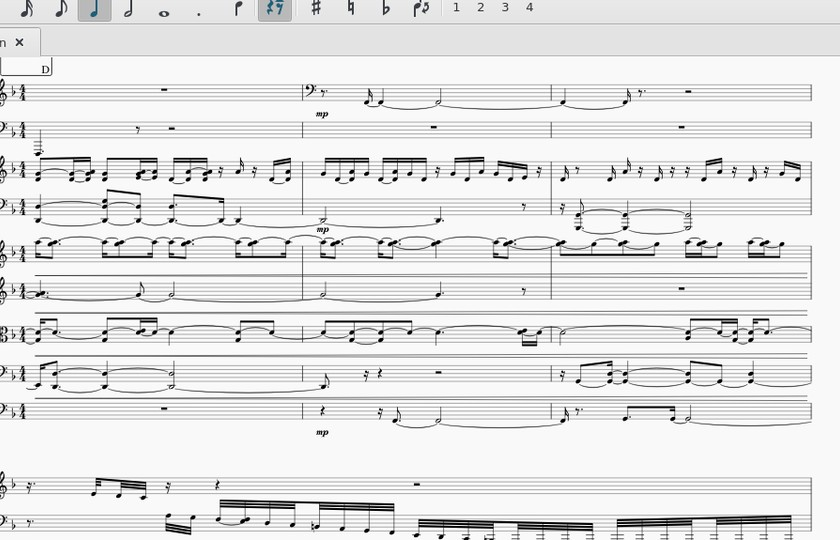
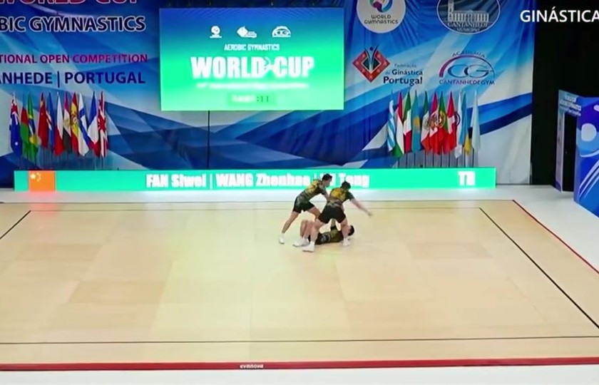
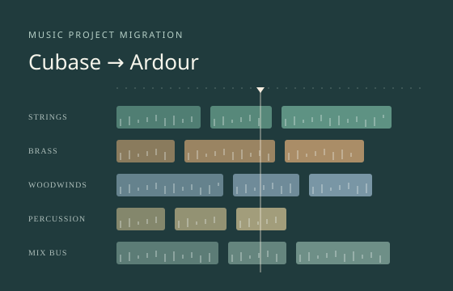
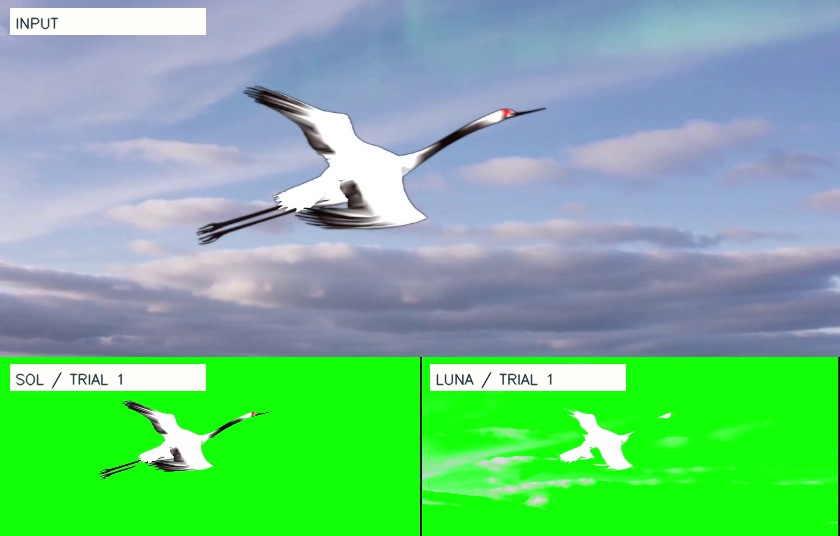

OMNIALE · ALE REPRODUCTION
ALE Omni Case 复现
每个案例收录任务定义、运行结果、轨迹与失败分析。
复现案例
4 个案例
音乐制作与演出服务多声部音乐转谱
从管弦乐录音，转写完整总谱
从一段139秒的管弦乐录音恢复27个乐器声部的音高、节奏、力度与配器，交付可以继续编辑和播放的总谱、MIDI及原生工程。允许通用转谱工具，禁止取用现成答案。

教育、训练与学习应用体育动作识别与规则判定
看清难度动作，写对每一个 FIG 编码
观看94秒的三人健美操视频，对照FIG规则识别8个难度动作的顺序、技术变体和计分值，交付难度动作表。考验细节观察与动作、规则条目的对应。

音频后期与声音工程音频工程恢复与迁移
把交响乐工程迁到 Linux，恢复原有声音
原工程的商业音源和效果器不可用，Agent需在Ardour中选择开源替代，保留音符、奏法、强弱和路由，交付可编辑工程、完整混音与独立分轨。

视觉媒体与视频后期参考引导抠像
从天空中的白鹤，分离出完整绿幕主体
从约10秒的天空视频中分离运动白鹤，保留羽翼、颈腿和完整运动，在Resolve/Fusion中交付可编辑工程及绿幕成片。Sol、Luna各三次独立运行，提供同步成片对照、逐帧评分与工具轨迹。